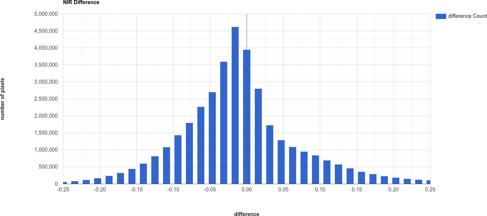
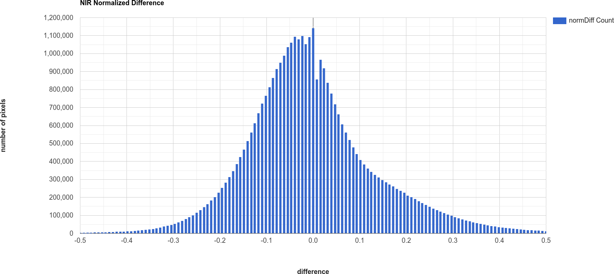

change detection in earth engine#
In this practical, we’ll build on week 3’s introduction to GEE and image analysis by seeing ways that we can use GEE for change detection and analysis. Just like last week, you should be able to do finish the practical even if you have no prior experience with programming. All of the programming steps have been provided for you in a collection of scripts, and your task will be to run each script and analyze/interpret the results.
getting started#
To begin, point your browser to https://code.earthengine.google.com, and log in if you need to. In the
Script manager under Reader, find the egm702 repository, and click on week4 to expand the week 4
folder.
Just like for week 3, the practical exercises are divided into a number of different scripts, labeled in order. For week 4, the scripts are:
01_visual_analysis.js02_thresholding.js03_change_vector_analysis.js04_time_series.js
In the Script manager, open the script for part 1 by clicking on week4/01_visual_analysis.js.
Remember that you have access to all of the scripts in the repository as a Reader, but in order to save any changes you’ll need to save the script to your own repository. Again, the easiest way for you to do this is to replace “YOUR NAME HERE!” on line 1 with your name, then click Save.
Save the script to your egm702 repository as week4/01_visual_analysis.js - just like last week, you should
see a week4 folder appear in the repository with a new script, 01_visual_analysis.js.
As you work your way through the practical, remember to save each script in this way, so that any changes you make to the scripts are saved in your repository.
part 1 - visual analysis#
In the first part of this practical, we’ll see how we can analyze change visually by comparing:
false-color composite images from different dates
individual bands from different dates
multi-temporal false color composites
The two images we will use are a Landsat 5 Thematic Mapper (TM) image acquired 19 July 1984, and a Landsat 5 TM image acquired 30 July 2011:
// add a TM5 image from 19 July 1984
var tm1984 = ee.Image("LANDSAT/LT05/C02/T1_L2/LT05_046028_19840719");
tm1984 = tools.oliRescale(tm1984); // rescale to surface reflectance values
// add a TM5 image from 30 July 2011
var tm2011 = ee.Image("LANDSAT/LT05/C02/T1_L2/LT05_046028_20110730");
tm2011 = tools.oliRescale(tm2011); // rescale to surface reflectance values
Run the script. You should see the following in the Map:
{kind=link}
This is a NIR/Red/Green false color composite (TM Bands 4, 3, 2), something that we have seen before. You should
see that in this color composite, vegetation appears red, water appears black, and soil/bedrock is shades of brown.
This image is from July 1984, approximately the same time as the air photos that you worked with in week 1. At this time, we can see that much of the vegetation on the north side of the volcano has been removed as a result of the eruption.
Now, toggle the 2011 SR layer on from the Layers menu. You should see the following image:

In this image, we can see a number of changes - on the south side of the peak, a large layer of snow is visible
in 2011 that was not present in 1984. We can also see that areas north of the peak where trees and vegetation were
removed or covered by landslide deposits have started to recover - areas that appear brown or tan colored in 1984 have
turned various shades of red in the 2011 image.
Question
South of the mountain, there are large areas that have shifted from bright red in the 1984 false color composite to a darker red in the 2011 image. Using what you know about surface reflectance in the NIR, what might explain this change?
Once you have had a look at the false color composite images, have a look at the NIR (TM Band 4) images, by toggling on
1984 SR B4 and 2011 SR B4. This should show somewhat similar patterns to the false color images. In the 1984
image, the area impacted by the eruption north of the volcano is much darker in the NIR:

In comparison, the 2011 image is quite a bit brighter in some areas, especially on the north side of the peak
in areas where significant deforestation happened as a result of the 1980 eruption, and on the mountain itself where
we see a large amount of snow:
{kind=link}
Note
When visually inspecting images for changes, we normally want the images to be visualized in the same way - that way, we know that the differences that we’re seeing are differences in reflectance, and not in the visualization.
To illustrate this, try changing the stretch on 2011 SR B4 so that it ranges from 0.05 to 1.30, rather than
0.65.
You should notice that now, it appears that the 2011 image is darker than the 1984 image, giving the impression that NIR reflectance has decreased, even though the opposite is true.
Visually comparing bands like this is one way that we can see the differences between color composites or individual bands. As discussed in this week’s lectures, we can also use a multi-temporal false color composite to visualize changes between images using a single composite image.
To illustrate this, we again use the NIR bands. First, we create a new image that has bands from both time periods:
// multi-temporal composite of NIR bands
var multitemp_b4 = ee.Image.cat([
tm1984.select('SR_B4').rename('1984_B4'),
tm2011.select('SR_B4').rename('2011_B4')
]);
Then, we add the image to the Map, with the red channel showing the 1984 reflectance, and the green and blue channels showing the 2011 reflectance:
// add the multi-temporal composite to the map
Map.addLayer(multitemp_b4, {bands: ['1984_B4', '2011_B4', '2011_B4'], min: 0.05, max: 0.65},
'Multi-temporal B4 composite', false);
To see the image, toggle Multi-temporal B4 composite on in the Layers menu:
{kind=link}
In the above image, areas where the reflectance is higher in the 1984 image are shaded red, and areas where the
reflectance is higher in the 2011 image are shaded blue. Areas where the the images are the same are shades of gray,
with the brightness determined by the reflectance.
Here, we see mostly blue and darker gray to the north of the peak, consistent with the observations from the individual bands. We also see that areas south of the peak show a decrease in NIR reflectance between 1984 and 2011, while much of the mountain has largely similar reflectance between the two dates (aside from the snow, that is).
Question
Have a look around the wider area - what other changes do you see in the multi-temporal color composite?
Question
Paste the following code at the end of the script (after line 47) to create a multi-temporal false color composite using the red reflectance (TM band 3), then re-run the script.
What are some of the differences between the NIR and Red changes that you notice? Using what you know about reflectance, and what you know about the changes at Mt St Helens between the two images, how can you interpret/explain these difference?
// multi-temporal composite of NIR bands
var multitemp_b3 = ee.Image.cat([
tm1984.select('SR_B3').rename('1984_B3'),
tm2011.select('SR_B3').rename('2011_B3')
]);
// add the multi-temporal composite to the map
Map.addLayer(multitemp_b3, {bands: ['1984_B3', '2011_B3', '2011_B3'], min: 0.05, max: 0.65},
'Multi-temporal B3 composite', true);
Visually inspecting images for differences can be an excellent way to identify changes, because our eyes can be quite sensitive to subtle differences in appearance between images. However, it is not always the most effective/efficient way to quantify changes - for this, we’ll look at other methods.
part 2 - band maths and thresholding#
Open the script for this part of the practical by clicking on 02_thresholding.js in the Script manager, or using
this direct link.
In this part of the practical, we’ll see how we can quantify changes using arithmetic operations, comparing the changes observed using:
a simple difference
a band ratio
a normalized difference
To determine areas where we likely see an increase in vegetation between 1984 and 2011. As in part 1, we’ll use the near infrared (Band 4), though feel free to modify the script for other bands and applications.
The first two examples calculated in the script are the difference and band ratio, using ee.Image.subtract() and
ee.Image.divide(), respectively:
// band maths examples
var diff = tm2011.select('SR_B4').subtract(tm1984.select('SR_B4')).rename('difference');
var ratio = tm2011.select('SR_B4').divide(tm1984.select('SR_B4')).rename('ratio');
Note
Because we’re only interested in a single band (NIR or SR_B4), we’re using ee.Image.select() to select
only that band from each image.
Next, we calculate the normalized difference by first creating a composite image, like we did in part 1 of the practical to view the multi-temporal false color composite:
// add the b4 bands from each year to a single image
var multitemp = ee.Image.cat([
tm1984.select('SR_B4').rename('1984_B4'),
tm2011.select('SR_B4').rename('2011_B4')
]);
then we use ee.Image.normalizedDifference() (documentation)
to calculate the normalized difference between 1984 and 2011:
// create a multi-temporal normalized difference
var normdiff = multitemp.normalizedDifference(['2011_B4', '1984_B4']).rename('normDiff');
Just like with examples discussed in last week’s lecture, such as NDVI1 or NDWI2, this has the effect of stretching the differences so that they vary between -1 and 1, which can help to enhance the changes that we see between the two dates.
To see this, run the script, then toggle on the Difference layer:

followed by the Normalized Difference layer:
{kind=link}
Toggle back and forth between the two images - you should notice that while the colors don’t change (remember that
the sign is the same for both), the values in the normalized difference image have been stretched to fill the color
range compared to the difference image.
Question
Remember to look at the ratio image as well - how do the changes that you can see in this image compare to the changes displayed in the difference and normalized difference images?
In addition to adding the images to the Map, we have also printed statistics and histograms for these two images to the Console:
 {kind=link}
{kind=link}
Just like with the images themselves, you should notice that the histogram of the normalized difference image is
spread out, or stretched, over a larger range - as a result, it has a much lower, broader peak than the difference
image.
Question
Click on Object (under “Difference”/”Normalized Difference”) to show the descriptive statistics
calculated for the difference/normalized difference image.
Which image has the larger standard deviation? What impact do you think this might have on determining what pixel values represent “normal variation”, and which values represent actual change?
Remember that in order to distinguish between “change” and “no change”, we have to pick a threshold value. Here, because we are interested in highlighting areas where vegetation has begun to recover, we’ll pick a single threshold value, and select only pixels where the pixel value is greater than or equal to the chosen threshold value.
In the script, you should see the following lines of code:
// mask the image based on a threshold
var mask = normdiff.gte(0.5) // select pixels greater than/equal to upper boundary
.clip(boundary); // clip to boundary to limit size
mask = mask.updateMask(mask.neq(0));
This uses ee.Image.gte() to select all pixels in normdiff with a value greater than or equal to 0.5, then
uses masks all pixels of the resulting image where this condition is not met.
Later in the script, we convert this mask to a vector, then export the vector to a shapefile format that you can use in your GIS software of choice.
To see what this mask looks like, toggle on the Thresholded Change layer in the Map:

You should probably notice that this threshold hasn’t managed to capture most of the changes that we can see
between the two dates - the masked areas are limited to a small part of the mountain, some of the river valley north of
the mountain, and small patches scattered around the rest of the image.
Question
Hopefully, it’s clear that I’ve deliberately set the threshold too high, which means that a lot of areas of genuine change have been excluded from the mask.
Using the histogram of the normalized difference image, the descriptive statistics, and a bit of trial and error, try to improve on this result.
The goal is to include as much of the vegetation regrowth that you can see north of the mountain as possible, while minimizing differences that are due to natural fluctuations in reflectance.
Note
Once you have a change mask that you feel captures most of the vegetation regrowth north of the mountain, while minimizing areas where not much change appears to have happened, be sure to click on the Tasks tab and run the task to export the shapefile to your drive.
part 3 - change vector analysis#
Open the script for this part of the practical by clicking on 03_change_vector_analysis.js in the Script manager, or using
this direct link.
For this part of the practical, we’ll use the same images that we used in the first two parts of the practical – this time, using change vector analysis (CVA). While CVA can be used for any number of band differences, we’re going to stick to the differences in NIR and Red reflectance between the two images, similar to what we looked at with the multi-temporal false color composite.
Question
What sort of applications might we have in mind if we are focusing on changes in NIR and red reflectance?
The main part of this script is used to calculate the magnitudes and angles of the change vectors, starting with the difference between the 1984 and 2011 images:
// compute the difference between the two images,
// and select bands 4 and 3 (NIR and Red)
var diff = tm2011.subtract(tm1984).select(['SR_B4', 'SR_B3']);
Note
When we use ee.Image.subtract(), the result subtracts each band of the second image from the same band of
the first image (assuming that they share band names). So, in this line of code:
var diff = tm2011.subtract(tm1984)
We would get back an image with the difference of all of the bands that tm2011 and tm1984 share in common.
By selecting only SR_B4 and SR_B3, however, we end up with just the difference in those two bands.
Next, we calculate the magnitudes of the change vectors:
// compute the magnitude of the change vectors as the square root of the
// sum of the squared differences.
var magnitude = diff.pow(2).reduce(ee.Reducer.sum().unweighted())
.sqrt().rename('magnitude');
followed by the angle of each change vector (converted from radians to degrees):
// compute the angle of the change vectors and convert to degrees
var angle = diff.select('SR_B3').atan2(diff.select('SR_B4'))
.multiply(180).divide(Math.PI).rename('angle');
And finally, we re-classify the angles so that the values in the image correspond to the quadrant the angle falls in:
// create a reclassified image of the angles, with the value set to the quadrant
// each angle range corresponds to.
var angleReclass = ee.Image(1)
.where(angle.gt(0).and(angle.lte(90)), 1)
.where(angle.gt(90).and(angle.lte(180)), 2)
.where(angle.gt(-180).and(angle.lte(-90)), 3)
.where(angle.gt(-90).and(angle.lte(0)), 4).clip(boundary);
Here, angles between 0 and 90 degrees get a value of 1; between 90 and 180 degrees, a value of 2, between -180
and -90 (or 180 and 270 degrees3) a value of 3, and finally between -90 and 0 (or 270 and 360), a value of
4.
Next, we mask the reclassified image so that only “large enough” changes (magnitude \(\geq\) 0.06) are shown:
// threshold the reclass image by changes w/ magnitude greater than 0.06
angleReclass = angleReclass.updateMask(magnitude.gte(0.06));
The final block of code will add the difference,magnitude, angle, and re-classified angle images to the map:
Map.addLayer(diff, {bands: 'SR_B4', min: -0.25, max: 0.25,
palette: ['7b3294','c2a5cf','f7f7f7','a6dba0','008837']}, 'difference', false);
Map.addLayer(magnitude, {min: 0.02, max: 1.36,
palette: ['f1eef6','d7b5d8','df65b0','dd1c77','980043']}, 'magnitude', false);
Map.addLayer(angle, {min: -180, max: 180,
palette: ['e66101','fdb863','f7f7f7','b2abd2','5e3c99']}, 'angle', false);
Map.addLayer(angleReclass, {palette: ['ff0000','ffffff','0014ff','cc00ff']}, 'reclass angle');
Run the script, then toggle the reclass angle layer on:
{kind=link}
In this image, red colors correspond to increases in both NIR and Red reflectance, white corresponds to increases
in NIR and decreases in Red reflectance, purple corresponds to decreases in NIR and increases in Red reflectance, and
blue corresponds to decreases in both NIR and Red reflectance.
You can also consult the diagram shown below:

In a number of areas, the blue color represents forest growth. To understand why this is, we have to remember both
what these changes represent – a decrease in both Red and NIR reflectance – and also what the forest is replacing:
in many cases, grassy meadows or new-growth trees, both of which tend to have higher spectral reflectance than
conifer forests:

Question
Using the diagram above and the colors on the map, what other differences do you notice?
Remember that some differences (or changes) might represent more than one kind of surface change. All we can tell by looking at the reclassified angle map is the broad direction of the change; we need to do a bit more to be able to explain what we see in terms of the physical changes that have taken place.
part 4 - time series#
Open the script for this part of the practical by clicking on 04_time_series.js in the Script manager, or using
this direct link.
The final portion of this practical will cover how we can get time series of data from images and visually inspect the results. We’ll see how we can compare time series of NDVI values for different land cover polygons, and compare the results that we see with the polygon locations in images at the beginning and end of the time series.
var ndvi_patches = ee.FeatureCollection([fastRegrowth, slowRegrowth,
forest, oldClearCut, newClearCut]);
The next sections of code here deal with loading Landsat images and filtering based space and cloud cover, similar to what we have done in previous steps. After this section, these lines of code:
// combine tm, etm+, oli, and mss images, add an NDVI band, and sort by date.
var allNDVI = mss.map(mssNDVI).merge(tm.merge(oli).map(getNDVI))
.select('NDVI').sort('system:time_start');
merge the MSS, TM, ETM+, and OLI image collections, calculate the NDVI for each image, and sort by acquisition date. We also pull out the first image in the series (a Landsat 1 MSS image from 1972), and the last (latest) image in the time series, and add both of these to the Map for visualization.
Finally, this block of code:
// plot a chart of the mean ndvi values, calculated using different polygons
// representing different landcover areas
var ndviChart = ui.Chart.image
.seriesByRegion({
imageCollection: allNDVI,
regions: ndvi_patches, // average using the features in each ndvi patch
reducer: ee.Reducer.mean(),
seriesProperty: 'label', // use the label values to plot individual series
scale: 100,
xProperty: 'system:time_start'})
.setOptions({
title: 'Mean NDVI',
hAxis: {title: 'date', titleTextStyle: {italic: false, bold: true}},
vAxis: {title: 'ndvi value', titleTextStyle: {italic: false, bold: true}},
curveType: 'function'})
.setSeriesNames(['ndvi']);
print(ndviChart);
creates a chart that will plot the average values for each of the individual polygons in ndvi_patches. You can see
what this looks like below. Note that some of the apparent lack of seasonality before about 2000 is mostly a result of
the lower temporal resolution – Landsat acquisitions were often limited during this time, and so some years will only
have a few available images.

Tip
If you open the chart (click on the icon in the upper right-hand corner), you can also export the data as a CSV file for further analysis.
Next, let’s try a different combination of polygons. To do this, we’ll need to change the code at line 17:
var ndvi_patches = ee.FeatureCollection([fastRegrowth, slowRegrowth]);
Instead of looking at the fastRegrowth and slowRegrowth features, let’s look at the fastRegrowth and
oldClearCut polygons.
Note
To visualize where the newClearCut polygon is, you can toggle it on from the GeometryImports menu.
To change the polygons that we use for the plot, replace slowRegrowth with oldClearCut at line 17, then
re-run the script:
var ndvi_patches = ee.FeatureCollection([fastRegrowth, oldClearCut]);
Question
Compare the
fastRegrowthNDVI towards the end of the time series with theoldClearCutNDVI near the beginning of the time series. Do you think these represent similar land cover types? Why or why not?Now, compare the
fastRegrowthlocation in theLast(latest) Landsat image, and theoldClearCutpolygon location in theFirst(oldest) Landsat image. Do you think these represent similar land cover types? Why or why not?Using the polygon location and the
Last(latest) Landsat image, what kind of land cover does theoldClearCutpolygon represent now? Why do you think this?
To add your own polygons, or to edit the polygons that are already included in the script, you can use the digitizing tools located in the upper left-hand corner of the map panel:

If you’re adding your own polygon, be sure to start the polygon as a new layer (click on + new layer at the
bottom of the Geometry Imports panel):

Next, start digitizing a polygon – try to make sure that the polygon represents one type of area. Remember that
you can use the Landsat images, as well as the background satellite images, to help you. From the Geometry Imports
panel, click the gear icon next to your new layer to change the properties:

Change the name to something other than geometry (or example), then change it to Import as a
Feature, and click to add property to the feature. Call it label, and add a value for the label.

Click OK, then digitize your polygon (if you haven’t already). Note that each feature can only contain a
single polygon – to add multiple polygons, you’ll need to create multiple features. You can then update the
ndvi_patches variable (line 17) and re-run the script to update the chart:

Feel free to try different polygons, and examine the different time series plots – try using the CVA angle map to
help you decide areas to look further into.
This is the end of this Practical – next week, we’ll look into using Earth Engine to do some more advanced classification techniques, and run an accuracy analysis on the results.
next steps#
In the 03_change_vector_analysis.js script, try changing the number of classes from 4 to 8 by copying and pasting
the following code at the end of the script, then re-running the script:
// re-classify the angles into 8 classes
var angleReclass2 = ee.Image(1)
.where(angle.gt(0).and(angle.lte(45)), 1)
.where(angle.gt(45).and(angle.lte(90)), 2)
.where(angle.gt(90).and(angle.lte(135)), 3)
.where(angle.gt(135).and(angle.lte(180)), 4)
.where(angle.gt(-180).and(angle.lte(-135)), 5)
.where(angle.gt(-135).and(angle.lte(-90)), 6)
.where(angle.gt(-90).and(angle.lte(-45)), 7)
.where(angle.gt(-45).and(angle.lte(0)), 8).clip(boundary);
// threshold the reclass image by changes w/ magnitude greater than 0.06
angleReclass2 = angleReclass2.updateMask(magnitude.gte(0.06));
// use an 8 color palette to visualize this color map
Map.addLayer(angleReclass2, {palette: ['b35806', 'e08214', 'fdb863', 'fee0b6',
'd8daeb', 'b2abd2', '8073ac', '542788']}, 'reclass angle - 8 classes', true);
How does this compare to the 4 class visualization? Consider the following questions:
Look at the areas of clear-cut forest to the NE of the mountain. Do you notice differences between different patches, or within individual patches, that aren’t apparent in the 4 class image?
Pay attention to the differences between angle class 3 (angles between 90 and 135 degrees) and angle class 4 (angles between 135 and 180 degrees). These correspond to increases in NIR reflectance, and decreases in red reflectance; angle class 3 represents smaller decreases in red reflectance, while angle class 4 represents larger decreases. Using the angle change map and the original false color composites, what kind of changes are you able to discern here?
notes and references#
- 1
Rouse, J.W., et al. (1974). Proceedings, 3rd Earth Resource Technology Satellite Symposium, 1, 48-62. https://ntrs.nasa.gov/citations/19740022614
- 2
McFeeters, S. K. (1996). Int. J. Rem. Sens., 17(7), 1425–1432. doi: 10.1080/01431169608948714
- 3
The reason that we use -180 and -90 here, instead of 180 and 270 (or -90 and 0 instead of 270 and 360) is because the output of
ee.Image.atan2()returns values between \(-\pi\) (-180 \(^\circ\)) and \(+\pi\) (180 \(^\circ\)).